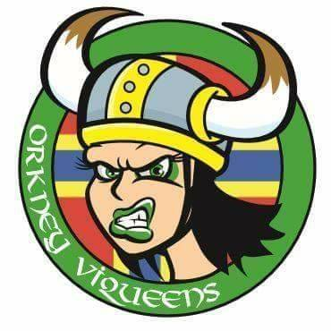

Orkney's ViQueens invade Inverness!
This weekend marks a particular piece of history, as Scotland's northernmost league make their public debut. Orkney's ViQueens have been working hard on becoming bout ready since their founding in January 2017, and have taken less than 20 months to do so, which is fairly impressive work. This will be an away game, as is common for debut bouts, hosted in the Capital of the Highlands, Inverness.
Although Inverness City Roller Derby are the closest bouting league to Orkney, it will still be a 180 km trip, as the crow flies, for the skaters attending their first ever bout as a team. (Whilst Elgin is a closer location, direct, it's faster to get to Inverness, due to the need to land at a sea- or airport at the mainland.)
Inverness City Roller Derby themselves, whilst very experienced, have only 2 public bouts on record themselves, as the travel costs for Highlands teams are difficult in general. (We'd hope that, together with Helgin Roller Derby, and potentially new league Ullapool Slayers, the newly bouting Orkney would allow a small "Highlands Leagues" cluster to support more sustainable competition in the future.)
We caught up with Orkney ViQueens founder, DeafWish, to learn about the team's history and feelings at this critical point in their existence.

Orkney is a bit more isolated than the majority of locations for Roller Derby leagues. How have you been coping with the higher cost of travel - for your skaters, and for guests?
We know it’s not the easiest place to get to, so we offer to accommodate visiting skaters and coaches wherever possible. We can also advise on cheaper routes and travel options. We try to make dates known as far in advance as we can, to help with being able to get cheaper options. We also have some great support and sponsorship: [Orkney-based jewellers] Ortak will allow us to use some of their self-catering accommodation to host officials for when we have a game at home (hopefully next year!) and when we travel [Northern isles ferry operator] Northlink offer us a discount on ferry travel, which really helps. Whilst this is your first public bout, Orkney ViQueens have had a very active first year and half. What's been the most important thing the team has done?
Undoubtedly it’s been our bootcamps. We had four in the first year, which let us progress to the next stage of our skills, learn from some amazing skaters, and meet people from other leagues who came to skate with us.
What have you been working on most, ahead of your first game?
The biggest challenge we have is being so isolated. We have no referees, NSOs or experienced skaters to help us navigate some of the more intricate penalties or elements of gameplay. We have been focusing on gameplay aspects like jam starts, responding to penalty calls, maintaining a pack and identifying people’s preferred roles. Inverness City have been a fixture of the ‘Northern’ cluster of Scottish Derby for a long while - how do your teams get on?
Both Inverness and Aberdeen's Granite City (our other nearest neighbour [by travel distance]!) are brilliant. We have had coaches and skaters from both come up to bootcamps with us, and they are always ready to answer our questions and offer advice and help. Natorious and Monica Yeller were our first bootcamp coaches so we are thrilled that Inverness are now our first opponents. What are your aims for your debut bout? Do you have a target score, just looking to play the game, or something else you want to do?
We would like to play the game well as a team. For us that means working together, developing confidence in our roles, keeping our penalty count down and having fun. Inverness are an experienced team so they are going to be a challenge for us, which we are looking forward to! What's next for Orkney ViQueens?
Building our pool of officials to help us have a better grasp of the game and have more effective scrims, and also recruiting and training bench and LUM staff. We are lucky for this game to have Hydra (Rule 56 and Rainy City Roller Derby) benching for us and some of our pre-mins skaters and family having the opportunity to learn NSO and LUM roles in this game. We will then build on this knowledge going forward. We have a busy few months coming up, with plans for another bootcamp with (Pay as you Feel Coaching's) Nuke and Udder in October; Granite City Roller Derby are coming for a skating holiday with us and we are hoping to have another away game in November. We are also continuing to develop our youth team, Orkney ViTeens, with after-school sessions.
Inverness City Roller Derby versus Orkney ViQueens Roller Derby will be held at Inverness Royal Academy, 18th August, from midday.